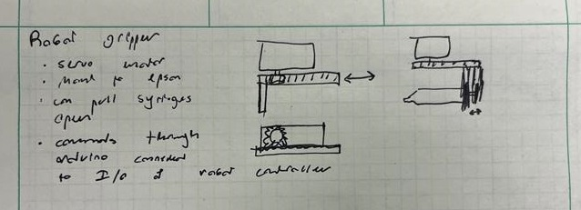
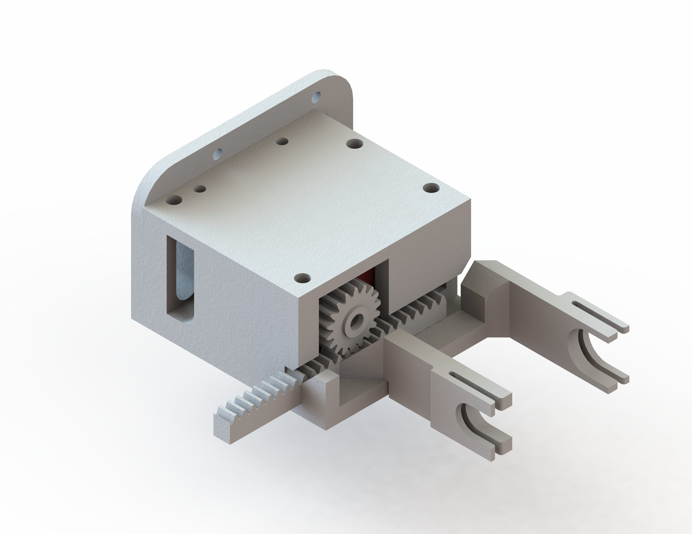
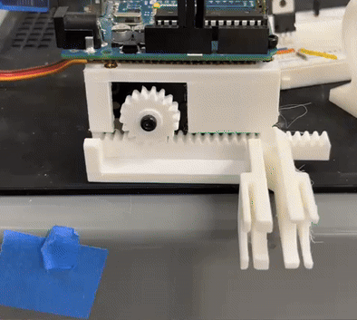
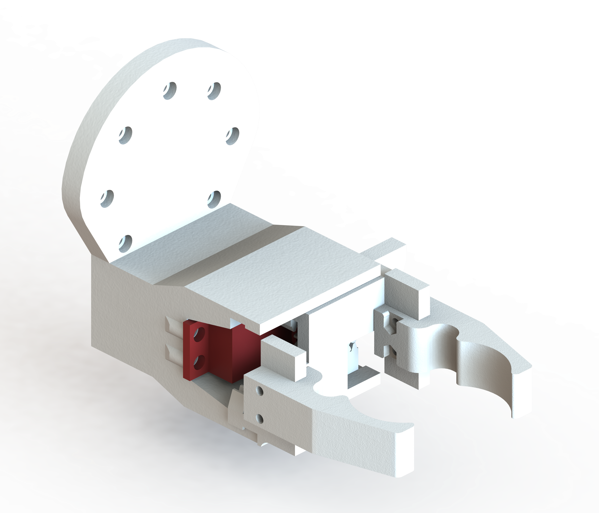

Robot Gripper Design Process
A detailed look at the iterative design process from initial concept to final implementation.
Initial Concept Sketch

Hand-drawn concept exploring basic gripper geometry and servo integration. This initial sketch helped define the core requirements and basic form factor for the automated pick-and-place system. Please note that the original idea was to use the gripper for grabbing and manipulating syringes to dispense liquid, as well as containers. This was later changed to a more general purpose gripper mainly for containers.
First CAD Design

Initial 3D model with finger geometry for syringes. This first iteration established the fundamental structure and component layout, translating the sketch into a manufacturable design.
First Prototype Testing


Initial prototype testing revealed issues with finger geometry and deformation when gripping containers. Syringes were not a problem, but the goal of the grippers changed as the project progressed.
Second CAD Iteration

Redesigned geometry and mechanism, as well as improved servo integration based on testing feedback. The syringe capabilities were removed here. This iteration also centered the gripper to allow for both fingers to move simultaneously. This was important for consistently placing parts of different sizes. However, there were still issues with the gripper fingers deforming and the linear gears not moving properly.
Final Optimized Design

Final iteration with optimized geometry, improved mechanism for linear rails and fingers. This version successfully met all performance requirements and was used in the self-driving lab.
Final Implementation

The completed robot gripper successfully integrated into the self-driving lab's material composition system. Each iteration, including the final one, was printed with an FDM printer.
Key Learnings
- Rapid Iteration: Quick transitions between CAD and prototyping enabled fast problem identification and resolution
- Real-world Testing: Physical prototyping revealed issues that weren't apparent in CAD analysis
- Design Optimization: Each iteration improved both functionality and manufacturability
- Systems Integration: Final design successfully integrated with existing lab automation systems